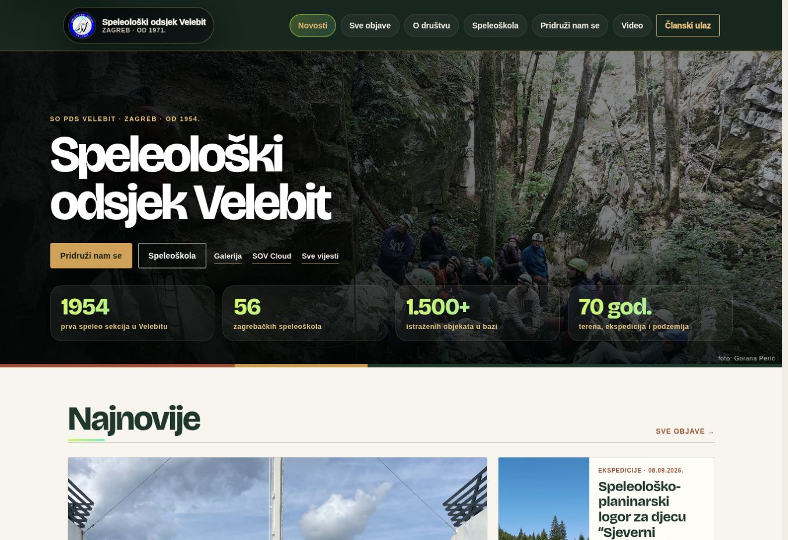

The need
A speleological club needs a public presence and practical tools for members managing equipment, trips and archives.
CUSTOM WEBSITE & MEMBER PLATFORM / SOV
A public website for SOV Velebit, with a separate member workspace for equipment, trips, archives and everyday club coordination.
Visit the website ↗
PROJECT IN PRACTICE
A speleological club needs a public presence and practical tools for members managing equipment, trips and archives.
A public website plus a role-based member workspace, with shared records backed by Supabase.
Members and organisers work with the same records, while editorial, equipment and archive responsibilities have their own access.
My role: design and development of the application and its data workflows.
TWO AUDIENCES. ONE PLATFORM.
News, expedition stories, galleries and school information make the club’s activity accessible on mobile and desktop.
Equipment, loans, trips and archives are organised around the practical needs of the community.
Supabase supports shared records and access organised around administrators, editors and specialist club roles.
Editorial and administrative tools support ongoing updates, with responsibilities separated by role.
A DISTINCT PRODUCT IN A SHARED ECOSYSTEM
SOV Web handles the public experience and member operations. The separately developed Android application adds maps, GPS, terrain and field documentation.
Explore SOV Android ↗